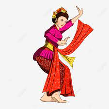

SENI TARI TRADISIONAL

Tari Jaipong Indonesia memang mempunyai banyak sekali jenis tarian tradisional. Semuanya itu tersebar ke seluruh penjuru Indonesia. Mulai dari Sabang hingga Merauke mempunyai tarian tradisionalnya masing-masing. Salah satu tarian tradisional di Indonesia ini yaitu Tari Jaipong. Tarian ini, merupakan jenis tarian yang berasal dari Jawa Barat. Awalnya, tarian jaipong ini berkembang di daerah Bandung, dan Karawang. ai tarian yang memiliki gerakan-gerakan yang unik, energik, dan sederhana. Tak hanya energik saja, tarian jaipong juga dimainkan dengan suasana yang humoris, dan ceria. Oleh karena itu, tarian ini dapat menghibur para penonton yang menyaksikannya. Bahkan, tak jarang dari penonton tertawa ketika melihat pertunjukan tarian jaipong ini. Mereka yang tertawa tersebut karena dirinya merasa terbawa suasana ketika menyaksikan. Tarian unik berasal dari Jawa Barat ini sampai saat ini masih tetap dilestarikan, dan dipelajarinya.
Tari jaipong adalah sebuah tari daerah yang berasal dari Karawang, Jawa Barat yang berkembang pada tahun 60-an. Mulanya tari jaipong dikenal dengan sebutan tari Banjet, sebuah pertunjukan seni tari yang yang dipentaskan dengan gerakan tari yang diiringi oleh musik dengan instrumen gamelan sebagai pengiringnya. Tari ini dahulu dijadikan sebagai hiburan rakyat, tari jaipong merupakan sebuah inovasi yang dilakukan oleh seorang seniman asal Karawang, tari ini merupakan gabungan dari pencak silat, wayang golek, topeng banjet, ketuk tilu, tarling, dan tepak topeng. Tari jaipong adalah sebuah tari daerah yang berasal dari Karawang, Jawa Barat yang berkembang pada tahun 60-an. Mulanya tari jaipong dikenal dengan sebutan tari Banjet, sebuah pertunjukan seni tari yang yang dipentaskan dengan gerakan tari yang diiringi oleh musik dengan instrumen gamelan sebagai pengiringnya. Gerakan yang ada pada tarian Jaipong merupakan gabungan dari sejumlah kesenian tradisional, seperti pencak silat, ketuk tilu, dan wayang golek. Oleh sebab itu, tarian ini dianggap sebagai tarian yang memiliki gerakan-gerakan unik, energik, dan sederhana. Di samping energik, tarian ini juga dimainkan dengan suasana yang menyenangkan sehingga tak jarang penonton merasa terhibur ketika menyaksikan tarian Jaipong.